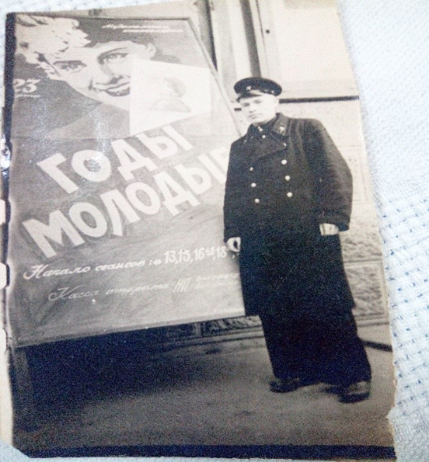

Шпак Николай Трофимович
Дата рождения: 01-01-1914
Место рождения: БССР, д. Ратмировичи, Гомельская обл., Октябрьский р-н
Дата смерти: —
Место содержания: Германия
Период содержания: с 1943г по 1945г
На третий день Великой Отечественной войны отец ушел на фронт и погиб в 1944 году. До 1943 года жили в деревне. В феврале немцы делали облавы, захваты, забирали людей, сортировали их, а детей 8-12 лет отправляли в концентрационный лагерь «Красный берег». Я был маленький, мне было 2 года и 2 месяца. Меня также могли отправить в этот лагерь, где немцы брали чистую кровь у детей для немецких солдат и офицеров. Но меня с мамой, как и других жителей деревень, погрузили в товарные вагоны-телятники и повезли в Германию. Место, где содержался в качестве узника: г. Виттенберг, на берегу Эльбы. Концентрационный лагерь состоял из маленьких бараков, окруженный колючей проволокой, выхода никакого не было. Мать работала на железной дороге, таскала шпалы, делала подсыпку. Жили в лагере 1 год и 2 месяца. Вспоминается лагерная решетка, песочница. Иногда проходящие жители-немцы бросали туда конфеты. Немцы ушли, оставив лагерь. Люди бросились в расположенный рядом лес. Вечером услышали песню «Катюша». Наутро появляются немцы-конвоиры, строят всех в колонну и куда-то ведут, кто пытается бежать, бросают гранаты, но появились наши кавалеристы и освободили всех оставшихся в живых. Так, благодаря нашим советским воинам, мы были спасены в мае 1945 г. Домой, Победа. Вспоминается высокое, высокое жито, по которому шли, а сам маленький. Жили на хуторе Зимча у бабушки. Ходил в школу до 4 класса за 4 км, а до 10 класса за 7 км. После школы окончил ремесленное училище по специальности рулевой моторист. Служил в Советской армии. Окончил политехнический институт по специальности инженер- технолог. С 1980 г. преподавал в автомеханическом техникуме, а с 2002 работаю заведующим лаборатории жидкости и газа в Минском государственном автомеханическом колледже.
/* Тут будет галерея */